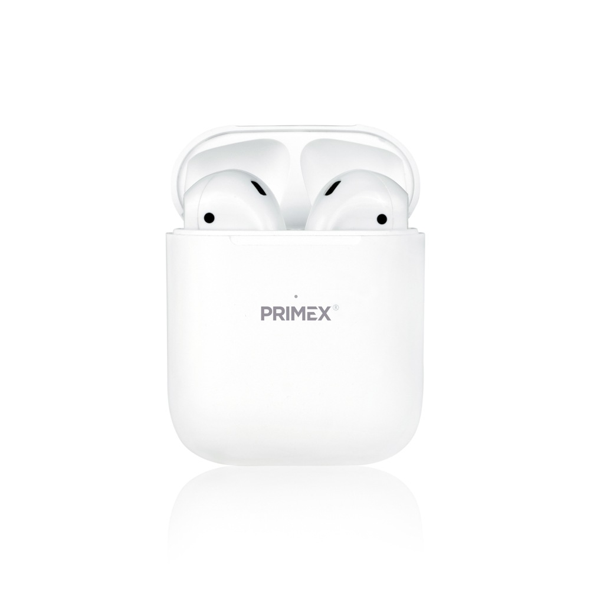
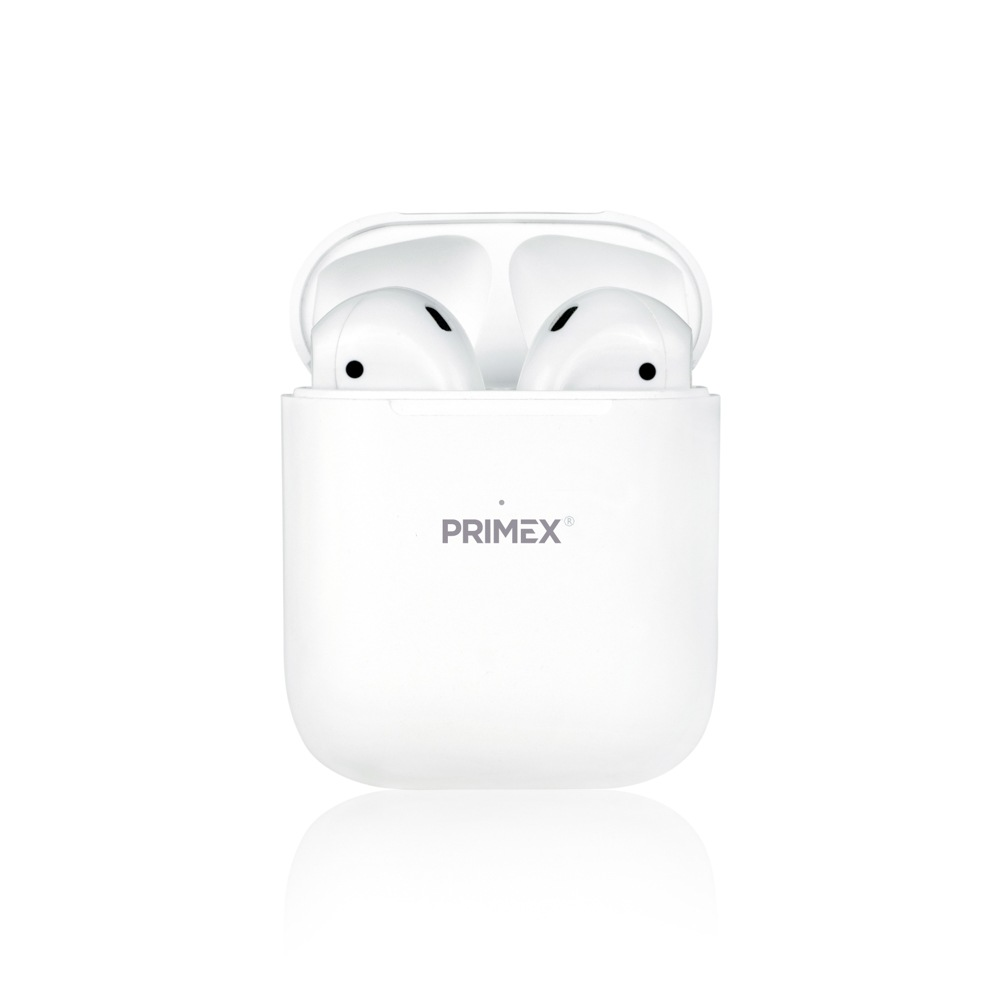

Test image - 

output on microsoft azure - ball
output on mobilenet model - tenissball
result -
mobilenet is more acurate
Test image - 

output on microsoft azure - soft drink
output on mobilenet model - wather bottle
result -
mobilenet is more acurate
Test image - 
output on microsoft azure -basketball
output on mobilenet model - backpack
result -
microsoft azure is more acurate
Test image -  

output on microsoft azure - design
output on mobilenet model - projector
result -
both are not acurate
Test image - 

output on microsoft azure - poster
output on mobilenet model - book
result -
mobilenet is more acurate